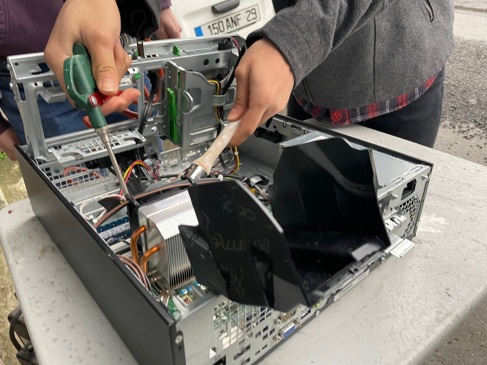
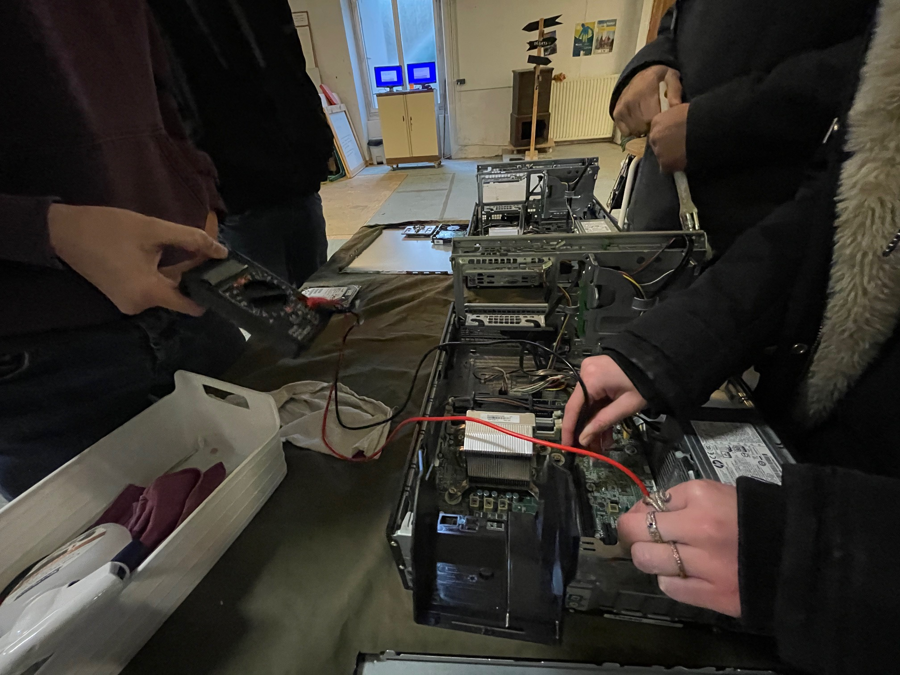
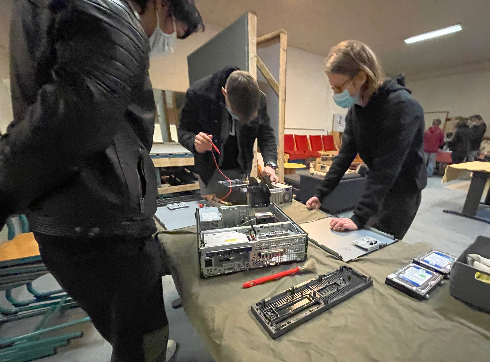
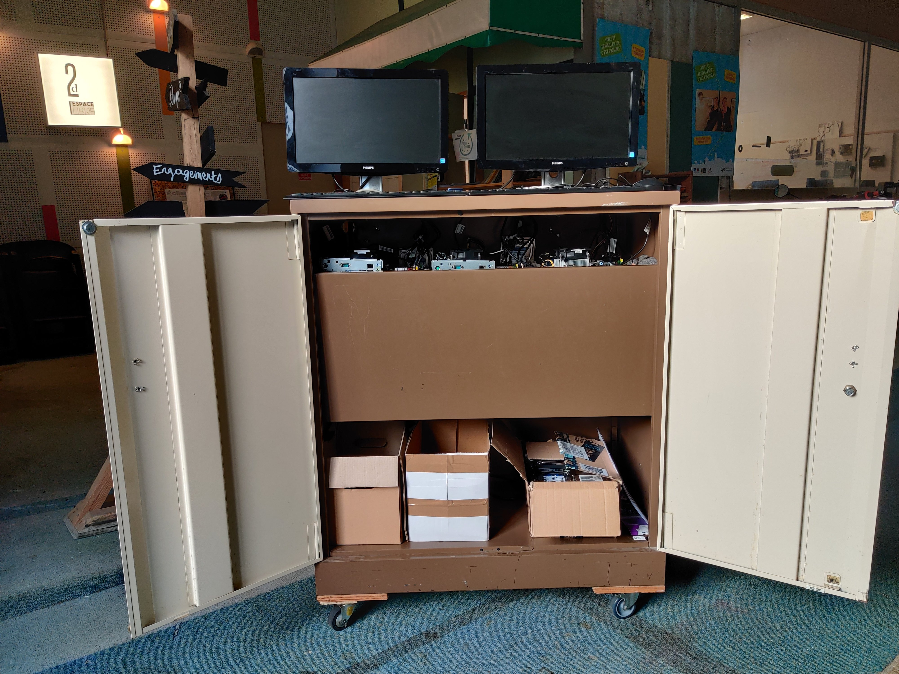

Les ateliers
Thème : Initiation au reconditionnement de matériel informatique.
Type : Pair-à-Pair / Durée : 1h30


Déroulement :
1- Présentation du chantier d’insertion.
2- Démonstration d’un reconditionnement.
3- Présentation du processus de clonage.
4- Mise en pratique.
5- Evaluation ludique des acquis.
Le protocole de reconditionnement
1- Ouverture du boîtier.
2- Enlever les caches.
3- Extraire le disque dur.
4- Passer le pinceau dans les pales du (des) ventilateur(s).
5- Passage à la soufflette.
6- Test de la pile.
7- Installation d’un disque dur cloné.
8- Fermeture et nettoyage du boîtier.


Le traitement des disques durs
Trois procédés sont expliqués :
- Le clonage de disques ou de partitions simultanément. (copie un disque dur sur un autre)
- La purge de disques par réécriture. (éffacement des données)
- La récupération de données.
- En raison du contexte sanitaire actuel, les ateliers s'effectuent en comité restreint. Contacter Michel Clech via clech.michel@wanadoo.fr pour en savoir plus.
Les participants réalisent les différentes étapes du reconditionnement.
L'atelier se termine par une évaluation des acquis sous forme d'échanges ludiques.